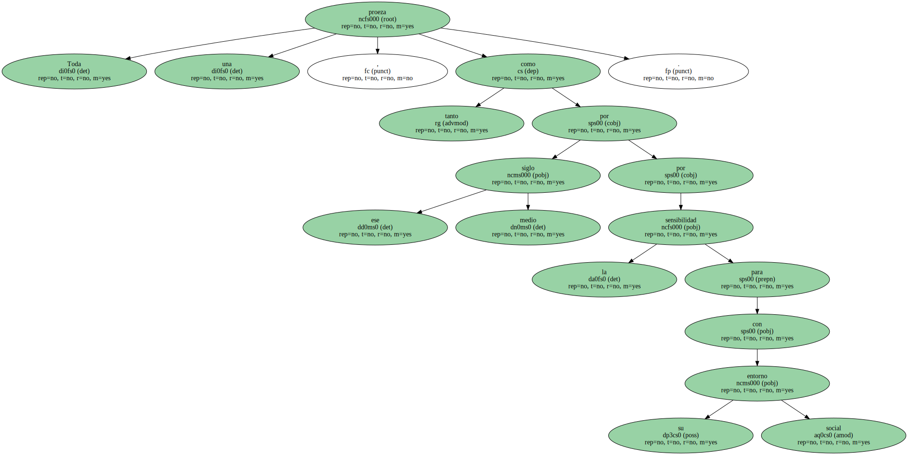
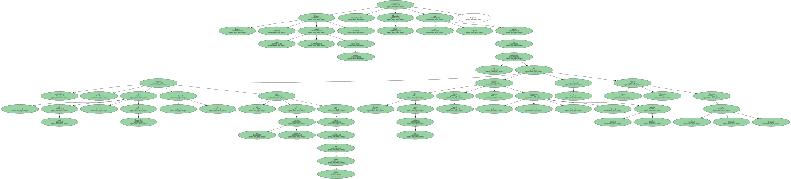
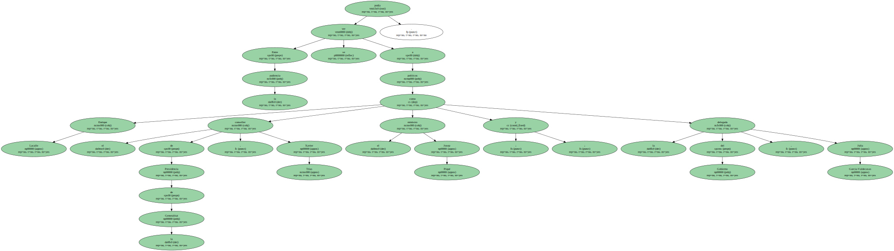
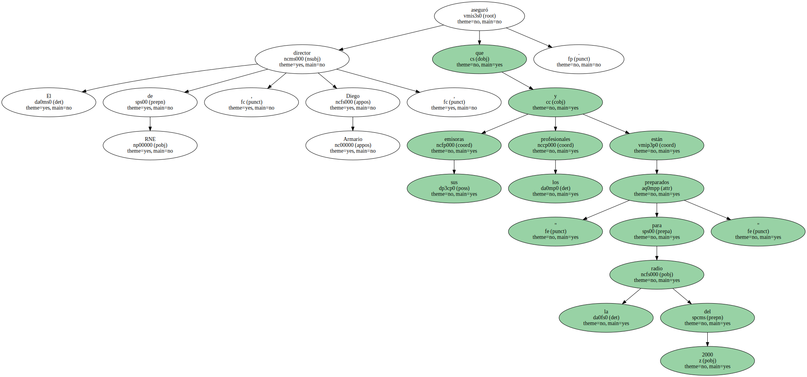
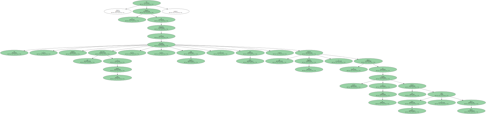
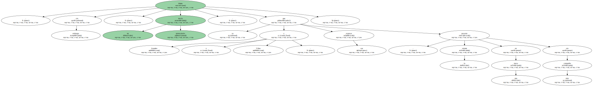
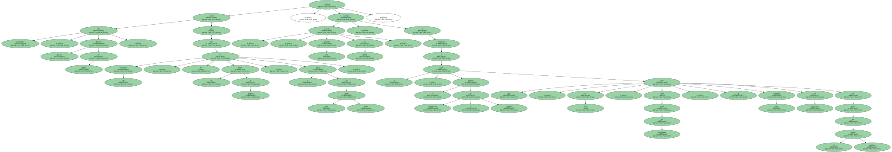

Voces de un ayer que marcó época y estrellas de las ondas de hoy , políticos de ese centro que se disputan desde todas direcciones , deportistas , artistas y altos ejecutivos de medios de comunicación se reunieron el Martes por la noche , en las Reales Atarazanas , para celebrar el 50º aniversario de Radio Nacional de España en Catalunya.

Toda una proeza , tanto por ese medio siglo como por la sensibilidad para con su entorno social.
Carlos Herrera , que se expresó en catalán , y Margarida Lluch presentaron el acto , abierto con un audiovisual de momentos emblemáticos ( el " ja sóc aquí " de Tarradellas o el inicio de los Juegos Olímpicos en boca del rey Juan Carlos ) , sintonías ( De España para los españoles , Elena Francis , Fantasía , Protagonistas nosotros ... ) y hasta anuncios ( Telefunken , La Lechera ).
Entre la audiencia se podía ver a políticos como Enrique Lacalle ; el conseller de Presidència de la Generalitat , Xavier Trias ; el ministro Josep Piqué y la delegada del Gobierno , Julia García-Valdecasas.
También actuales cargos de RTVE como Javier González Ferrari y Javier Grima , además de la antecesora de éste en Sant Cugat , Aurora Catà ; colegas de la competencia como Jordi Vilajoana y Enric Sopena ; el EX de la casa y abogado Ricard Fernández Deu ; así como el analista político Fernando Jáuregui , el director teatral Lluís Pasqual y el campeón motociclista Sito Pons.

El director de RNE , Diego Armario , aseguró que sus emisoras y los profesionales están " preparados para la radio del 2000 ".
Fue entonces el momento de homenajear a dos " personajes singulares que representan a otros muchos " , Jorge Arandes y Joan Viñas , que recibieron dos litografías y el aplauso de estrellas actuales de las ondas tan dispares como Josep Cuní y Nieves Herrero.
Hubo , sin embargo , un desliz protocolario , ya que Arandes y Viñas , y sus esposas , pasaron la velada en una mesa sin más compañía.
Pío Cabanillas , director general de RTVE , resaltó que este aniversario " no es un punto de llegada , sino el inicio de una nueva etapa " , y concluyó : " Levanto una barretina por RTVE " , en homenaje a su padre , ex ministro de Información y Turismo que , en 1974 , como señal de aperturismo , se puso una barretina en Barcelona en favor de la cultura catalana.
